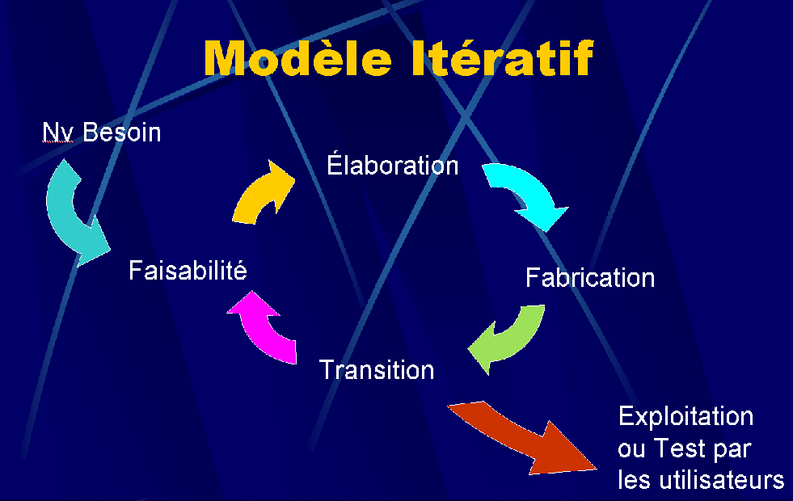

🔍 Description du modèle
Le modèle itératif et incrémental consiste à découper le développement en plusieurs petits cycles (itérations). Chaque itération délivre une partie utilisable du produit, permettant d’ajuster les exigences au fur et à mesure.
🖼️ Schéma illustratif
⚙️ Fonctionnement des itérations
- Planification initiale
- Analyse des besoins pour l’itération
- Conception de la solution partielle
- Implémentation de l'incrément
- Tests et validation partiels
- Évaluation et rétroaction pour préparer l’itération suivante
✅ Avantages
- Flexibilité accrue grâce aux retours fréquents des utilisateurs
- Détection rapide des erreurs et des incompréhensions
- Livraisons fréquentes, apportant une valeur ajoutée régulière
❌ Inconvénients
- Gestion plus complexe des ressources et des priorités
- Risque de dérive du projet sans gestion rigoureuse des itérations
- Documentation moins structurée si les itérations ne sont pas bien organisées
📋 Cas d’utilisation typiques
- Projets avec exigences imprécises ou évolutives
- Projets de taille moyenne à grande nécessitant une livraison rapide de valeur
🧪 Rôle des tests dans ce modèle
Les tests sont exécutés de manière régulière à chaque itération, permettant une amélioration continue et une qualité constante tout au long du projet.
- Tests unitaires fréquents
- Tests d'intégration réguliers
- Tests système incrémentaux
- Tests d'acceptation itératifs avec utilisateurs